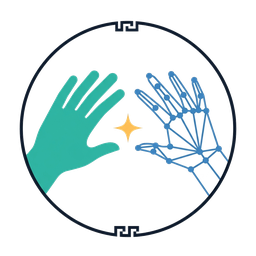
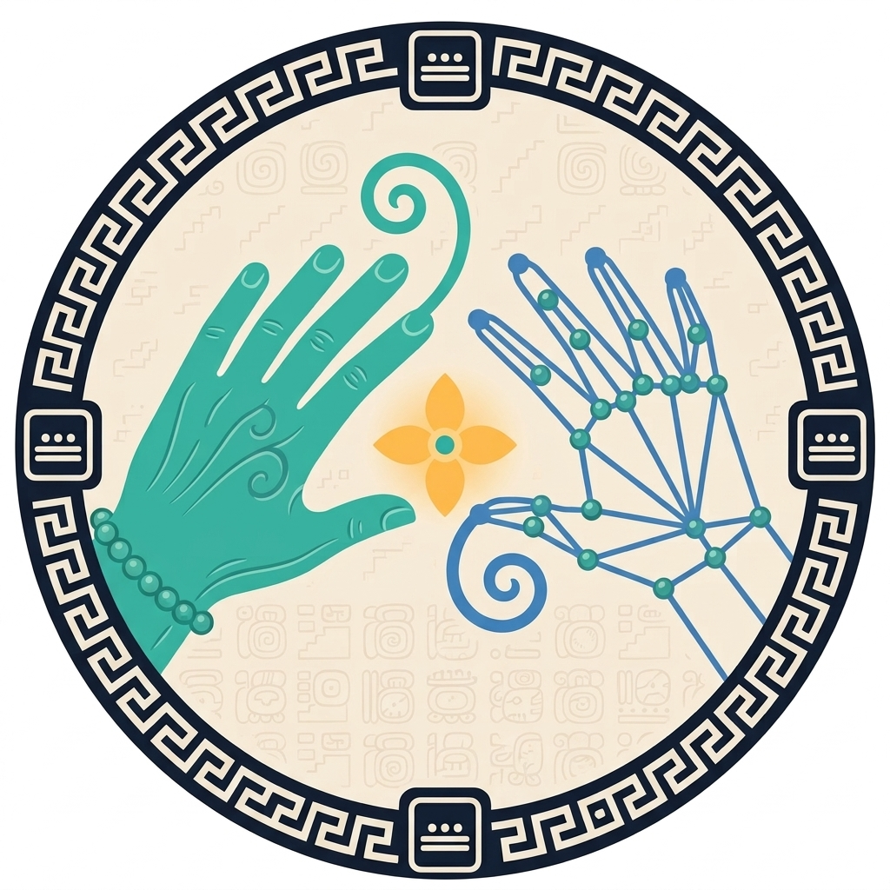
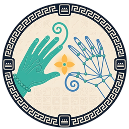
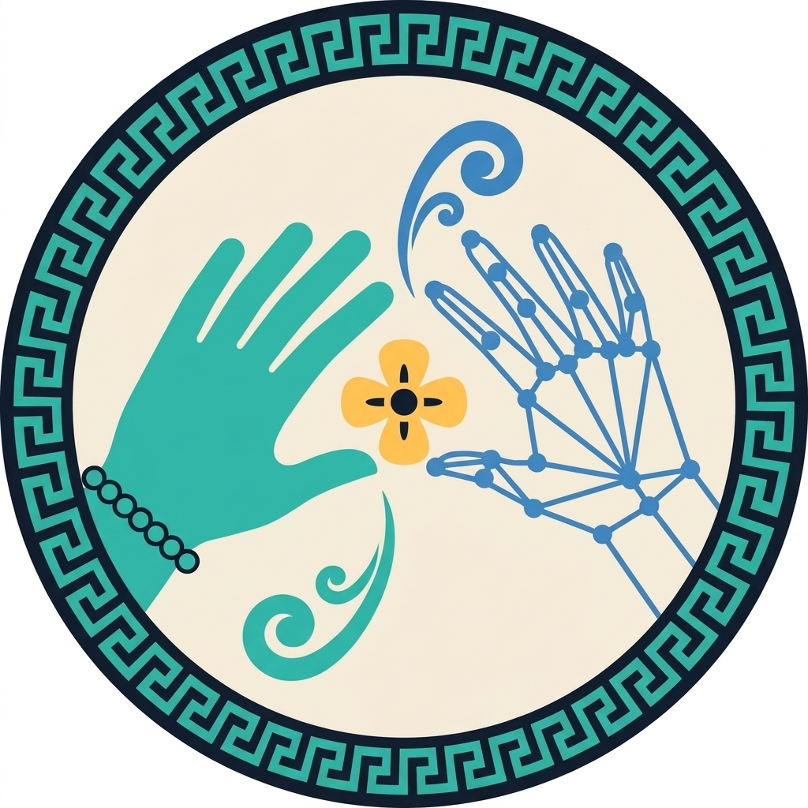
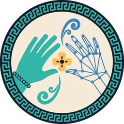

Referencia: concepto C «Diálogo» (v1)
El concepto elegido, tal como salió en la primera ronda. Es la imagen que recibió el modelo de edición.
Revisión: referencia

fondo claro#0F1724
Modelo: google/nano-banana-2.1/edit (edición con imagen de referencia) · resolución 1k · una sola generación por imagen.
El concepto elegido, tal como salió en la primera ronda. Es la imagen que recibió el modelo de edición.
Revisión: referencia

fondo claro
Versión rica en detalles: cartucho maya completo, para el póster y la portada de la documentación.
Revisión: cumple, con detalles
Conserva la composición (mano sólida, mano de puntos, estrella, aro) y las manos siguen siendo lo principal, cada una con 5 dedos. Sí trae: banda azul marino ancha, 4 cartuchos con numerales de puntos y barra (3 puntos + 1 barra = 8, el mismo en los 4), fondo crema con textura de glifos, una voluta jade desde el índice de la mano sólida y una azul desde el pulgar de la mano de puntos, estrella de 4 pétalos tipo k'in con centro jade y brillo, pulsera de cuentas de jade, líneas de relieve en la mano y puntos como cuentas de jade. Sin texto. Detalles: la greca de la banda es un meandro tipo «griego» en espiral, no la greca escalonada maya; la textura de glifos en la mitad de abajo se nota más de lo «sutil» pedido; el emblema llena casi todo el lienzo y casi no deja margen. En pequeño la banda se vuelve una textura gris y los numerales se pierden: es para tamaño grande (póster, portada).

fondo claro
Versión más limpia: menos detalle para que se lea bien en tamaño chico (ícono de la app, encabezados).
Revisión: cumple a medias
Conserva la composición, 5 dedos en cada mano, sin texto. Aro grueso azul marino con greca en jade, interior crema plano, estrella de 4 pétalos tipo k'in en ámbar (con centro azul marino) y pulsera de cuentas. Es el que mejor se lee a 64 y 32 px y sobre azul marino. Detalles: la greca vuelve a ser meandro tipo «griego», no escalonada; las 2 volutas flotan sueltas (una arriba entre las manos y otra abajo, bajo el pulgar) en vez de salir de cada mano; el aro toca el borde del lienzo (se recorta un poco arriba y a los lados), así que para usarlo como ícono hay que agregarle margen.

fondo claro